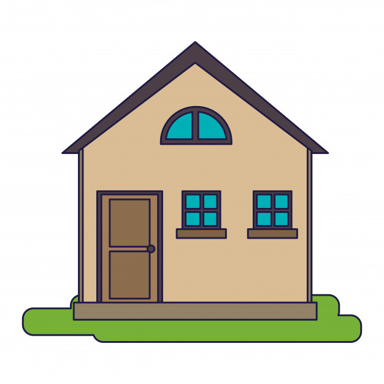
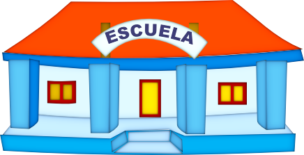
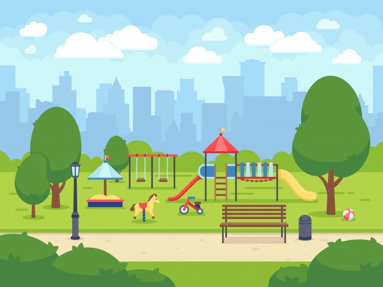
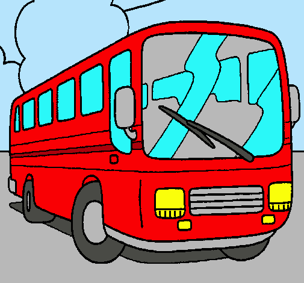
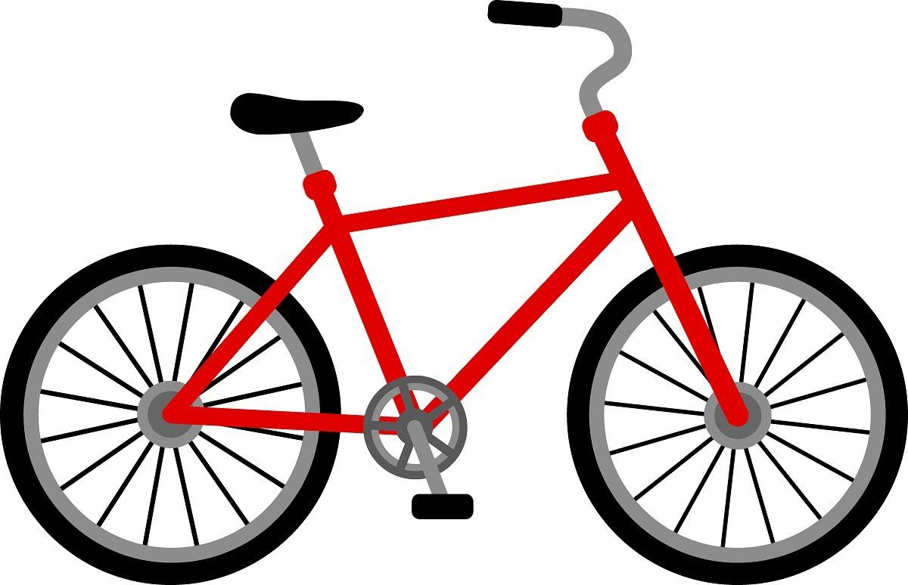
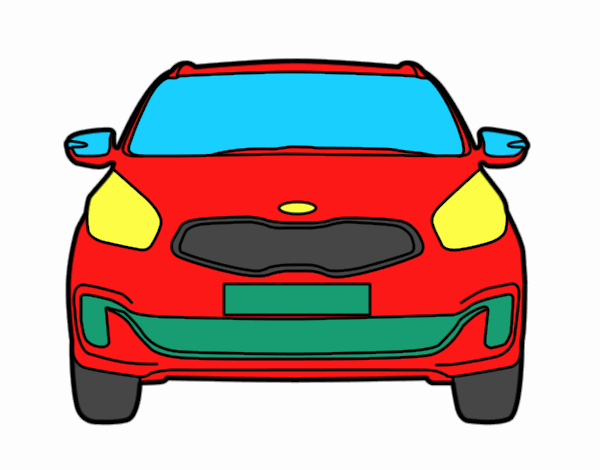
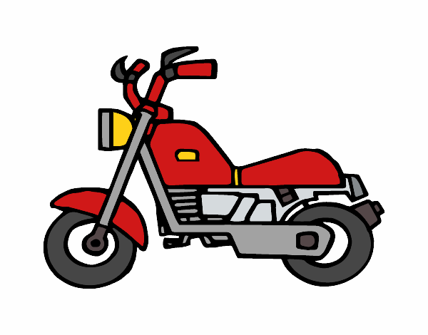
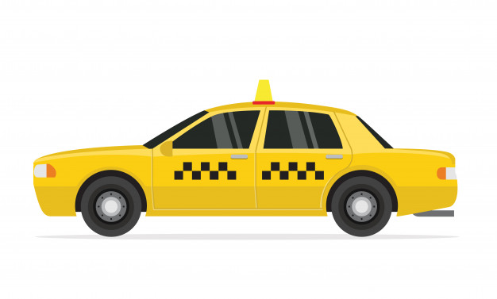

     

<main id="contenedor" class="contenedor">
  
  
  

  
  
  

  
  
  

  
</main>

<div class="botones">
    <input id="reproducir"  type="button" value="Comunicar" class="btn btn-success">
 
</div>

<script>

    


 
$(document).ready(function () {

    var sonidos;
        //LUGARES
    $('#casa').click(function(){
        $('#pantalla_tres').replaceWith("")
        sonidos=1;
    })
    $('#escuela').click(function(){
        $('#pantalla_tres').replaceWith("")
        sonidos=2;
    })

    $('#hospital').click(function(){
        $('#pantalla_tres').replaceWith("")
        sonidos=3;
    })
    $('#plaza').click(function(){
        $('#pantalla_tres').replaceWith("")
        sonidos=4;
    })

    //TRANSPORTE
    var transporte;
      $('#autobus').click(function (event) {
        $('#pantalla_tres').replaceWith("");       
       sonidos=5;
        })

        $('#bicicleta').click(function (event) {
        $('#pantalla_tres').replaceWith("");       
        sonidos=6;
        })
        $('#carro').click(function (event) {
        $('#pantalla_tres').replaceWith("");       
        sonidos=7;
        })
       
        $('#motocicleta').click(function (event) {
        $('#pantalla_tres').replaceWith("");       
        sonidos=8;
        })
        $('#taxi').click(function (event) {
        $('#pantalla_tres').replaceWith("");       
        sonidos=9;
        })
         //BAÑO
         $('#baño').click(function (event) {
        $('#pantalla_tres').replaceWith("");       
       sonidos=10;
        })


    $('#reproducir').click(function () {

        $('#contenedor').load('play.html')

    })

  /* REPDUCION DE SONIDOS  */
    $('#reproducir').click(function(){
        var casa= new Audio();
            casa.src="../comunicate/sonidos/lugares/casaq.wav";
          var escuela= new Audio();
            escuela.src="../comunicate/sonidos/lugares/escuelaq.wav";
          var hospital= new Audio();
            hospital.src="../comunicate/sonidos/lugares/hospitalq.wav";
          var plaza= new Audio();
            plaza.src="../comunicate/sonidos/lugares/plazaq.wav";
            //transporte
            var autobus= new Audio();
            autobus.src="../comunicate/sonidos/transporte/autobusq.wav";
          var bicicleta= new Audio();
            bicicleta.src="../comunicate/sonidos/transporte/bicicletaq.wav";
          var carro= new Audio();
            carro.src="../comunicate/sonidos/transporte/carroq.wav";
          var moto= new Audio();
            moto.src="../comunicate/sonidos/transporte/motoq.wav";
            var taxi= new Audio();
            taxi.src="../comunicate/sonidos/transporte/taxiq.wav";
            //baño
            var bano=new Audio();
            bano.src="../comunicate/sonidos/higiene/banoq.wav";


            switch (sonidos) {
                case 1:
                    casa.play()
                    
                    break;

                    case 2:
                        escuela.play()
                    
                    break;

                    case 3:
                         hospital.play()
                    
                    break;

                    case 4:
                       plaza.play()

                    break;
                      //transporte
                      case 5:
                        autobus.play()
                    break;
                    case 6:
                        bicicleta.play()
                    break;
                    case 7:
                        carro.play()
                    break;
                    case 8:
                        moto.play()
                    break;
                    case 9:
                        taxi.play()
                    break;
                    case 10:
                        bano.play()
                    break;
                  
            
                
            }
    })


    
  


      
  }); 
 


       


</script>